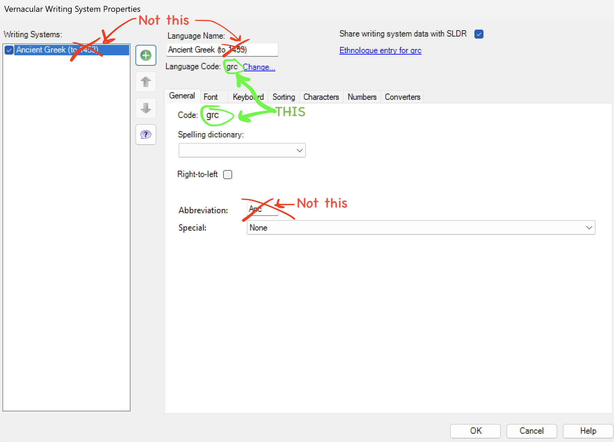

Important: If the writing system codes in your Excel sheet (or those you enter in the converter)
do not exactly match the codes already defined in your FLEx project, FLEx will create new writing systems
and your imported data will be placed there. This leads to duplicates and a messy cleanup. Always use the exact codes from your FLEx project.
Which code to use
Use the value labeled Code on the General tab of the Writing System properties.
Do not use the Abbreviation or the language name text.
Where to find it in FLEx
- Open FLEx → Tools → Configure → Writing Systems…
- Select the relevant writing system
- Vernacular for the baseline text
- Analysis for Gloss and Free Translation
- Go to the General tab and copy the value in Code (e.g.,
grc).

Use the Code value (circled in the screenshot). Do not use Abbreviation or Language Name.
Enter these codes in the converter
- Vernacular Writing System: your project’s Vernacular Code
- Gloss Writing System: the Analysis Code used for word glosses
- Free Translation Writing System: the Analysis Code used for free translations
Codes are BCP 47 tags (e.g., en, grc, es-419, or custom tags). Enter them exactly as shown in FLEx (including case).
If you already imported with the wrong codes
- Open Tools → Configure → Writing Systems…
- Remove the unintended/duplicate writing systems FLEx created
- Re-import using the correct codes
Pre-import checklist
- Vernacular Code matches exactly
- Gloss/Analysis Code matches exactly
- Free Translation/Analysis Code matches exactly
- No stray spaces; case matches